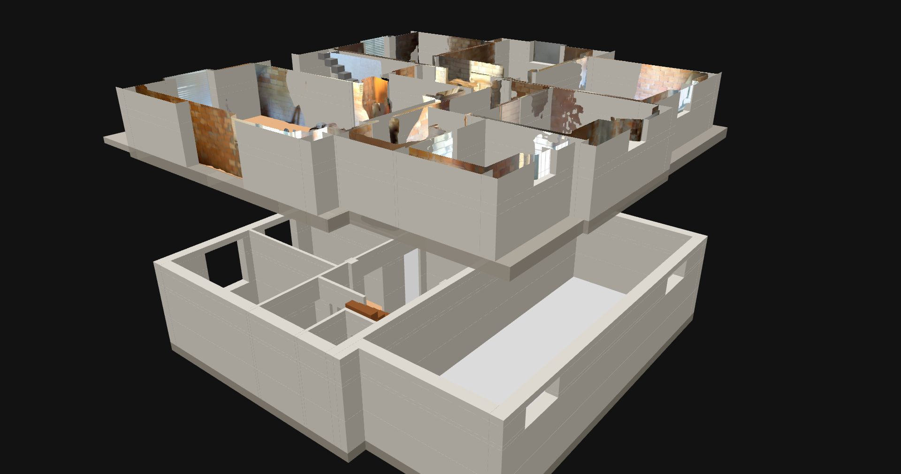

Studio di fattibilità
Project1
Aprilia · piano terra e seminterrato · due unità
Scorri per vedere il progetto ↓
Il progetto in numeri
Un piano terra, due case.
Il piano terra rilevato con Polycam e la quota di seminterrato diventano due unità: una su un solo livello, l'altra su due livelli collegati da una scala interna. Le superfici sono nette e calcolate dalle piante di questa pagina.
Modello 3D
Sopra e sotto, nello stesso modello.
Piano terra e seminterrato insieme, con lo stato attuale e il progetto. Puoi sovrapporre il rilievo Polycam, separare i due piani con la vista esplosa e vedere dove si apre il solaio per la scala interna.

Circa 7 MB, si caricano solo quando apri il modello.
Le due unità
Come si divide la casa.
Entrambe le unità si aprono sul pianerottolo della scala condominiale, che resta comune come la cantina del seminterrato. L'unità B scende al seminterrato con una scala tutta sua, senza passare dalle parti comuni.
Unità A
Solo piano terra · 65,3 m² netti
- Soggiorno con cucina17,9 m²
- Camera matrimoniale14,8 m²
- Camera15,1 m²
- Bagno9,7 m²
- Ingresso3,9 m²
- Disimpegno3,9 m²
Unità B
Duplex · 39,6 + 39,8 m² netti
Piano terra
- Soggiorno con cucina e scala30,4 m²
- Bagno5,2 m²
- Lavanderia4,1 m²
Seminterrato
- Camera11,1 m²
- Camera9,7 m²
- Bagno3,6 m²
- Disimpegno, scala e ripostiglio15,4 m²
La scala interna
Una rampa unica lungo il muro di spina, dal soggiorno al seminterrato: 16 alzate da circa 19 cm e pedate da 25 cm. Il foro nel solaio misura 0,92 × 3,20 m e arriva nel disimpegno della quota dell'unità B.
Finestre ribassate
Le finestre del seminterrato oggi sono alte 60 cm, sotto il soffitto. Abbassando il davanzale di un metro, a 20 cm dal giardino, diventano finestre normali da circa 1,60 m e danno aria e luce alle camere.
Cosa cambia
Al piano terra si toglie poco: il tramezzo tra la camera e il disimpegno e quello tra ingresso e soggiorno. Si chiudono due passaggi per separare le unità e si apre un varco nel muro di spina. Nel seminterrato si costruiscono i tramezzi delle camere.
Tavole tecniche
Le carte del progetto.
Stato attuale, progetto, demolizioni e costruzioni, sezioni. Formato A3 in scala 1:100. Clicca una tavola per vederla a tutta pagina.


Stato di fatto
Il rilievo, com'è oggi.
Il piano terra è stato scansionato con Polycam: la mesh fotografica è allineata al modello disegnato, così ogni misura si controlla sul posto.

- Altezza interna del piano terra: circa 3,00 m, misurata sul rilievo.
- Piante confrontate: le camere del rilievo corrispondono alla planimetria entro pochi centimetri.
- Seminterrato: disegnato dalla planimetria esistente, oggi accatastato come deposito.
Prossimi passi
Da verificare in sito.
- Altezza netta del seminterrato: nel modello è 2,80 m.
- Quota del giardino rispetto al piano terra: nel modello è −2,30 m, ricavata dalle finestre a 1,20 m dal suolo.
- Direzione dei travetti del solaio, guardando il soffitto del seminterrato: decide quanto rinforzo serve attorno al foro della scala.
- Posizione dei pilastri e della trave sul muro di spina.
- Seconda finestra della camera nord: nuova apertura sul fronte strada, da confermare.
- Cambio d'uso del seminterrato da deposito ad abitazione e frazionamento catastale.
File del progetto
Tavole A3PDF · 4 tavole Modello SketchUpSKP · millimetri Modello 3D disegnatoDAE · Collada Modello 3D nel browsercon rilievo PolycamIl file SketchUp ha un tag per ogni parte, stato attuale e progetto, e cinque scene già pronte.
Il progetto è sempre qui.
Questa pagina si aggiorna insieme al lavoro: computo metrico e valutazione economica arriveranno nelle prossime versioni.
Scrivici